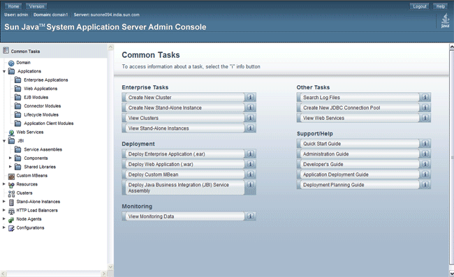
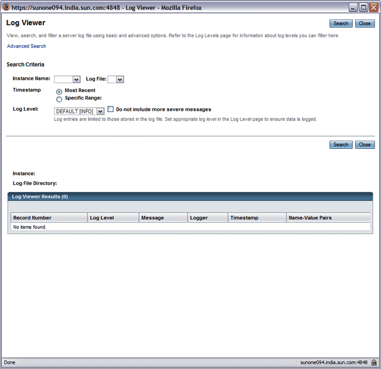

| |
| Sun Java System Application Server 9.1 |
Welcome to the Quick Start Guide. This guide describes basic steps for using Application Server.
Note - For the latest version of this document, see the Sun Java System Application Server 9.1 Quick Start Guide posted at docs.sun.com. The posted version of this document contains additional instructions for advanced features, such as clusters and load balancing.
Before using the procedures in this document you must have already installed the Application Server software.
The steps are presented in the order that you should complete them. This section contains the following topics:
To enable administrators to manage server instances and clusters running on multiple hosts, Application Server provides these tools:
The Admin Console, a browser-based graphical user interface (GUI)
The asadmin utility, a command-line tool. For a list of all
command-line tools available with the Application Server, see Table 1-1
in the Sun
Java System Application
Server 9.1 Quick Start Guide.
Programmatic Java™ Management Extensions (JMX) APIs
These tools connect to a server called the Domain Administration Server, a specially designated Application Server instance that intermediates in all administrative tasks. The Domain Administration Server (DAS) provides a single secure interface for validating and executing administrative commands regardless of which interface is used.
A domain is a collection of configuration data, deployed applications, and machines with a designated administrator. The domain definition describes and can control the operation of several applications, stand-alone application server instances, and clusters, potentially spread over multiple machines. When the DAS is installed, a default domain called domain1 is always installed. You work with the default domain in this guide.
The following table describes what the variable names and default paths are for the directories used in this guide. Variable names are in the first column, and default paths are in the second column.
|
Variable Name |
Description and Path |
|---|---|
|
install-dir |
By default, the Application Server installation directory is located here:
|
|
domain_root_dir |
By default, the directory containing all domains is located here:
|
|
domain_dir |
By default, domain directories are located here: domain_root_dir /domain_dir |
This topic provides instructions for the following basic tasks: starting the Domain Administration Server (DAS), logging into the Admin Console, examining the log files, and starting the node agent. The steps are presented in the order that you should complete them.
 To
Start the Domain on Solaris and Linux
To
Start the Domain on Solaris and LinuxTo start the Domain Administration Server, start the default domain, domain1.
Add the install-dir/bin/ directory to the PATH environment variable.
Set the AS_ADMIN_USER environment variable so that you do not need to type it for every command.
Set the value of AS_ADMIN_USER to the admin user you specified when you installed the Application Server.
Start the server by entering this command:
asadmin start-domain domain1
When you are prompted for the admin password and the master password, enter the passwords that you provided during installation.
When the start up process has completed, the following message appears:
Domain domain1 started
Each domain has a corresponding profile: enterprise, cluster, or developer. domain1 is created with the default profile, which is defined in the AS_ADMIN_PROFILE variable defined in the asadminenv.conf file. For more information on the three profiles see the Usage Profile section in Sun Java System Application Server 9.1 Administration Guide. If domain1 was created with developer profile, when you log in to the Admin Console, you cannot use features such as clustering and node agents. To use clusters and server instances, use the create-domain command to create a domain with cluster profile. For information on creating domains, type asadmin create-domain ––help or see the Sun Java System Application Server 9.1 Reference Manual.
To
Start the Domain on WindowsTo start the Domain Administration Server, start the default domain, domain 1.
From the Explorer window or desktop, right click My Computer.
Choose Properties to display the System Properties dialog.
Click the Advanced tab.
Click Environment Variables.
In the User variables section:
If a PATH variable exists, verify that install-dir\bin exists in the path: install-dir\bin;other_entries. If install-dir\bin does not exit in the PATH variable, add it.
If a PATH variable is not present, click New. In Variable Name, type PATH. In Variable Value, type the path to the server's bin directory: install-dir\bin. Click OK to commit the change.
Add a new environment variable AS_ADMIN_USER and set it to the Administrative User Name that you assigned during installation.
Click OK to commit the change and close the remaining open windows.
Start the Application Server by clicking the Start Admin Server option within the Programs menu.
When a command prompt window opens to prompt you for the admin password and the master password, enter the passwords that you provided during installation.
A window appears with a message telling that you the server is starting:
Starting Domain domain1, please wait. Log redirected to domain_dir\domain1\logs\server.log...
When the startup process has completed, you see an additional message:
Domain domain1 started.Press any key to continue ...
Each domain has a corresponding profile: enterprise, cluster, or developer. domain1 is created with the default profile, which is defined in the AS_ADMIN_PROFILE variable defined in the asadminenv.conf file. For more information on the three profiles, see the Usage Profile section in the Sun Java System Application Server 9.1 Administration Guide. If domain1 was created with developer profile, when you log in to the Admin Console, you cannot use features such as clustering and node agents. To use clusters and server instances, use the create-domain command to create a domain with cluster profile. For information on creating domains, type asadmin create-domain ––help or see the Sun Java System Application Server 9.1 Reference Manual.Press a key to close the message window.
To
Log In to the Admin ConsoleThe Admin Console is a browser interface that simplifies a variety of administration and configuration tasks. It is commonly used to:
Deploy and undeploy applications
Enable, disable, and manage applications
Configure resources and other server settings
Configure clusters and node agents
Manage server instances and clusters
Select and view log files
Configure load balancers
For further information about using the Admin Console, consult the Application Server online help.
Type this URL in your browser:
http:// localhost:4848
If the browser is on a different system than the server, replace the localhost variable with the name of the system that the Domain Admin Server is running on.
4848 is the Admin Console's default port number.
If you changed the port number during the installation, use that number
instead.
If you have installed the cluster profile, the admin port is secure, by
default. For cluster profile, the URL for Admin Console is https://
localhost:4848.
Note - If a popup window appears with a message such as Website Certified by an Unknown Authority, click OK.
This message appears because your browser does not recognize the self-signed certificate that the Domain Administration Server uses to service the Admin Console over the secure transmission protocol.
When the log in window appears, enter the admin user name and password.
Click Login.
In the left pane, select what you want to manage from the tree provided. In the right pane, various administrative tasks are listed under the Common Tasks heading.
To
View the Domain Administration Server Log FileApplication Server instances and the Domain Administration Server produce annotated logs on the file system. By default, all errors, warnings or useful informative messages are logged.
From the Common Tasks list in the right pane, click Search Log Files to launch a new browser window for Log Viewer.
In the Log Viewer window, select "server" from the Instance Name drop-down list and click Search.
The Domain Administration Server's recent log file entries are displayed.
Scan the messages and look for any WARNING or SEVERE messages indicating that problems were encountered during server startup.
You can close Log Viewer at any time. After you create clusters and deploy applications, examine log files if any of the operations failed. Use Log Viewer to view the log files of any running Application Server instance in the domain.
For more information about the log file, see the Configuring Logging chapter in Sun Java System Application Server 9.1 Administration Guide.
To
Start the Node AgentA node agent is a lightweight process running on each machine that participates in an Application Server administrative domain. The node agent is responsible for starting and stopping server instances on the host. It also communicates with the Domain Administration Server to create new Application Server instances.
Note - You can use node agents only on domains with the cluster or enterprise profile. If you are running only a developer domain, you need to create a domain with cluster profile before you can create and use node agents. For information on creating domains, type asadmin create-domain --help or see the Sun Java System Application Server 9.1 Reference Manual
One node agent is needed on a machine for each Application Server administrative domain that the machine belongs to. If you chose the Node Agent Component during installation, a default node agent called hostname was created.
In a terminal window, type this command:
asadmin start-node-agent hostname
Replace the variable hostname with the name of the host where the Application Server is running.
When you are prompted, provide the master password.
The node agent starts and connects with the Domain Administration Server.
Ensure that the Domain Administration Server is running before you start the node agent. Check the server.log file of a cluster instance to identify problems related to starting node agents or cluster instances.
If you have problems while starting a node agent or a cluster on Windows, see the Sun Java System Application Server 9.1 Release Notes for possible solutions to the problem.
After the node agent has executed once, you can view it in the Admin Console. You can create node agents by using the asadmin create-node-agent command. For information on creating node agents, type asadmin create-node-agent --help, see the Sun Java System Application Server 9.1 Reference Manual.
In this section you started the Domain Administration Server and confirmed that it is running. You also logged in to the Admin Console and used the Log Viewer. You started the node agent. You can stop the Quick Start trail here if you do not wish to continue, or you can go on to the next section.
The next steps of the Quick Start Guide are available in the following chapters.
These chapters are available only in the Sun Java System Application Server 9.1 Quick Start Guide posted on docs.sun.com.
Chapter
2: Setting Up a Cluster
Steps for creating
a cluster.
Chapter
3: Deploying An Application
Deploy a sample application to a cluster.
Other resources for learning about and using Application Server are available. They include:
Product details at install-dir/docs/about.html.
See this document for the latest information on what is new, and pointers to tutorials and other educational services.
Sample applications at install-dir/samples
See the sample applications for Application Server examples and documentation for them.
Sun Java System Application Server 9.1 Release Notes
See this document for late-breaking information regarding this release.
Sun Java System Application Server 9.1 Administration Guide
See this document for information on performing administrative functions using the Admin Console.
The Utility Reference (man pages)
See this document for reference information on Application Server's command-line utilities, such as asadmin.
Sun Java System Application Server 9.1 High Availability Administration Guide
See this document for information on the Sun Java System Application Server's high availability features.
The Java EE 5 Tutorial
See this document for a tutorial that covers the process for building and deploying Java Enterprise Edition (Java EE) applications.
Java BluePrints guidelines for the Enterprise
See this document for a comprehensive set of examples that demonstrate operations of the Application Server software and that can be used as application templates.